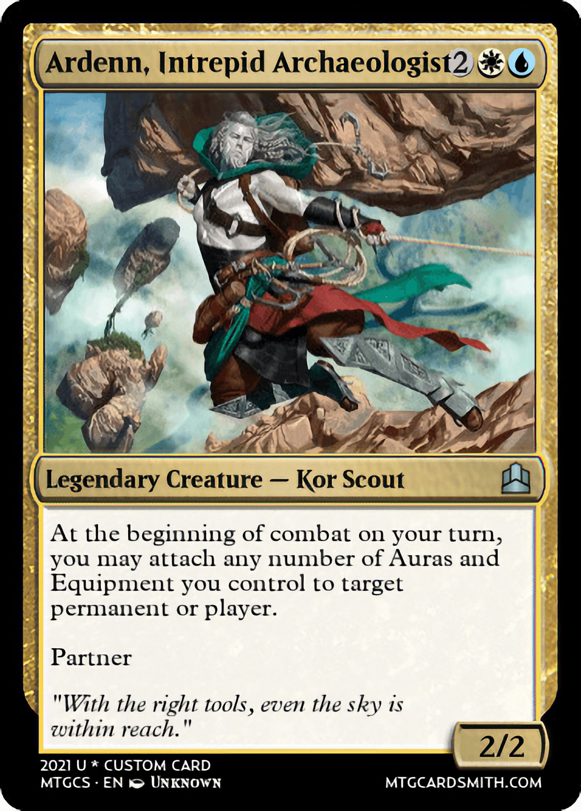

Presentations
An important part of the course includes discussions of a number of papers related to certain research topics. Throughout the semesters, we will read and discuss papers on a broad range of topics. To have fruitful interactions in the class, paper discussions are organized around the different "roles" students play each week: Librarian, Reviewer, Archaeologist, Researcher, Industry R&D Expert, Hacker, and Private Investigator.
To minimize time spent between context switches, students are encouraged to use a shared Google Slide document to include any slides to complement their presentations. Each student should title their slides using a role emoji (e.g. üßô‚Äç‚ôÇÔ∏è: Aykut) and present their views about 8-10 mins. Note that the slides will act as a mnemonic and should help to clarify your points -- also note that your presentation role determines what you should include in your slides. The only exception are the hackers, who can perform demos using Jupyter notebooks.
Grading: 23 points: Throughout the semester we will discuss a total of 10 papers. Each week we will have two parties of students, one party presenting on Thursdays. Hence, each student will be in the presenting role for two of the papers and the non-presenting role for the remaining ones. You can earn up to 9 points each time you present for completing the assignment for your role and presenting it to the class. When you are not presenting, you can earn up to 5 point by completing the non-presenting assignment and by participating in the class through live discussion and questions.
Presentation roles
| Librarian: Some topics may be new for the majority of students in the class. Prepare a very brief lecture to provide just enough background knowledge to equip others with basics of the subject. | |
 |
Reviewer: Complete a full – critical but not necessarily negative – review of the paper. Follow the guidelines for NeurIPS reviewers (under "Review Content"), taking note of the example reviews included therein. In particular, please answer questions 1 to 10 under "Review Content", including assigning an overall score. |
 |
Archaeologist: Determine where this paper sits in the context of previous and subsequent work. Find and report on one prior paper that substantially influenced the current paper and one newer paper that cites this current paper. |
| Researcher: Propose an imaginary follow-up project -- not just based on the current but only possible due to the existence and success of the current paper. | |
| Industry practitioner: Propose a new application for the method in the paper (not already discussed in class), and discuss at least one positive and negative impact of this application. | |
| Hacker: Implement a small part of the paper on a small dataset or toy problem. Or alternatively, if an official implementation exists just try to break the model -- showcase examples of successful and not so successful results on novel inputs. | |
| Private Investigator: Find out background information on one of the paper authors. Where have they worked? What did they study? What previous projects might have led to working on this one? What do you think motivated them to work on this project? Feel free to contact the authors, but remember to be courteous, polite, and on-topic. Write that you're in Prof. Aykut's seminar and include a link to this page. | |
| Non-presenters: Come up with a new title for the paper and/or a new name for the algorithm it proposes. Additionally, bring at least one question about the paper (either something you're confused about or something you'd like to hear discussed more). |
Deadline: You should meet with the instructor before the presentation date (
- after the Tuesday lecture that week
In the Spring 2025 semester, we will read and discuss these papers.